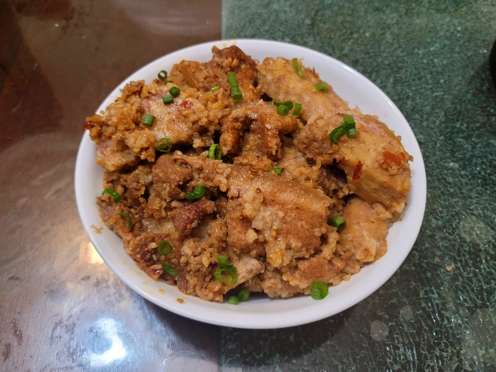

Fen Zheng Rou (Steamed Pork with Rice Powder)

Ingredients:
Marinade:
- 1 lb Pork belly, sliced 1/4" thick
- 1 tsp Ginger, minced
- 2 tsp Shaoxing Wine
- 1 piece Red fermented bean curd
- 1 tbsp Spicy bean sauce
- 1 tsp Five spice powder
- 1/2 tsp Sugar
Rice Powder:
- 6 tbsp Long grain rice, uncooked
- 3 tbsp Sweet rice, uncooked
- 1/4 piece Star anise
- 1/4 tsp Sichuan peppercorns
Fen Zheng Rou:
- 1 lb Taro, peeled, halved and then sliced 1/4" thick, rinsed
- 1/2 cup Water
- 2 tsp Light soy sauce
- 1 Scallion, finely sliced
Instructions:
- Combine the marinade ingredients and let marinate for at least an hour or overnight.
- Prepare a large steamer over high heat.
- Place a wok over medium-low heat. Add the rice ingredients and toast, tossing occasionally, for about 5 minutes, or until slightly browned. Then transfer to a spice grinder or a mortar and pestle. Grind down to a very coarse powder.
- Combine the rice powder with the water to make a paste. Place the pork, rice paste, taro, and soy sauce into a large heat safe bowl that will fit in the steamer. (Keep in mind the rice will expand as it cooks.) Mix to combine.
- Place the bowl into the prepared steamer. Steam for about 70-90 minutes, or until cooked completely. Garnish with the chopped scallions and serve immediately.